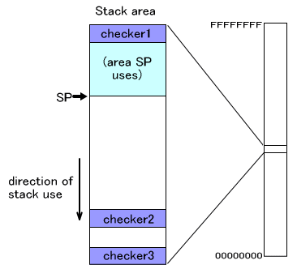
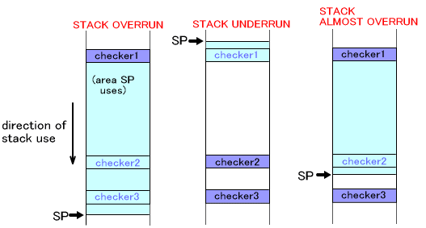

プログラムが動作するときにはスタック領域を使用します。この領域はレジスタの退避であったり自動変数領域などで用いられますが、ユーザにはどのぐらい使われているか見えにくい部分になっていますし、用意した領域以上にスタックを消費してスタック溢れが起こっても、それが原因で不具合が発生するのは大抵プログラムがもっと進んでからであって、バグを追いにくいものにしています。
このために TWL-SDK にはスタック溢れのチェック機構を用意しました。原理的には、スタック領域に特定の値を書き込んでおき、それが書き変わっているかをチェックすることで「その領域がスタックとして使われたか」を知ることが出来るというものです。TWL-SDK ではスタック最上位、スタック最下位、スタック中の任意の位置の3箇所にチェッカーを置くことが出来ます。このチェッカーのことをカナリア(canary) とも呼びます。
チェッカーとして書き込む値は、アドレスとして余り用いられないようなマジックナンバーを選んでいます。

上の図で、チェッカー1 が書き換えられた場合、スタックアンダーフローを起こした可能性が高いと言えます。(もちろんスタックに全く関係しないプログラム上の別の不具合で書き換えられたという可能性は否定できません。以下も同様です。)
チェッカー3 が書き換えられた場合、スタックオーバーフローを起こした可能性が高いと言えます。
また、ユーザが自由に設定出来るチェッカーが用意されています。上の図のチェッカー2 に相当しますが、スタックオーバーフローが実際に起こってしまうとプログラム動作が不定になるのでその前に「スタックオーバーフローしそうだ」ということを検出するために、このように警戒水準位置としてスタック最下位の近くに配置するといった使用が考えられます。

スレッドを作成すると、スタックの最上位と最下位には自動的にマジックナンバーが書き込まれます (上図の checker1 と checker3 に相当します)。 ユーザが自由に設定出来る警戒水準のチェッカー (上図の checker2 に相当します) は設定されません。必要ならば、OS_SetThreadStackWarningOffset() で設定してください。ただしすでにこの領域がスタックとして使用されているときに設定すると動作に影響が出ますので、通常はスタックがまだ使用されていない時
(スレッドを作成した直後など) に設定してください。
チェッカーはスレッドごとに作成されます。
ローンチスレッド (OS_InitThread() を呼び出した自らのスレッド) にもスタック最上位と最下位にチェッカーが置かれます。アイドルスレッドには置かれません。
書き込んだマジックナンバーが別の値になっているかどうかはアプリケーションから
OS_CheckStack() を呼んで調べてください。３つのチェッカーが1つでも書き換えられている場合、OS_Panic() で停止します。FINALROM では何も影響しないコードに置き換えられます。
また、OS_Panic() で停止するのではなく、関数の返り値で調べたい場合は OS_GetStackStatus() を呼んでください。こちらは FINALROM でも正確に情報を返します。
これらのチェック関数は、カレントスレッドのスタックに対してのみ有効です。他のスレッドのスタック溢れは検出出来ません。
割り込みが起こったときに使用される IRQ スタックにもスタック溢れチェッカーを設定することが出来ます。
OS_SetIrqStackChecker() IRQ スタックにチェックのためのマジックナンバーを書き込みます。
OS_SetIrqStackWarningOffset() IRQ スタックの警戒水準位置を設定してマジックナンバーを書き込みます。
OS_CheckIrqStack() IRQスタックのチェッカーが書き換えられたかを調べ、書き換えられていたらプログラムを停止します。
OS_GetIrqStackStatus() IRQスタックのチェッカーが書き換えられたかを調べ、結果を返します。
2008/09/16 初版